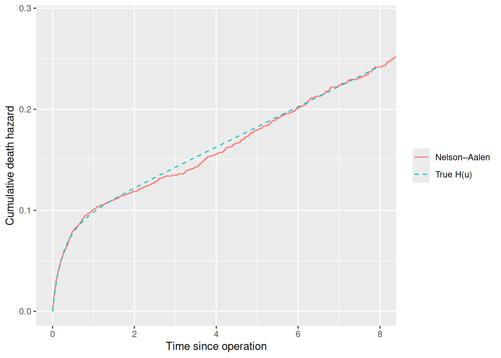
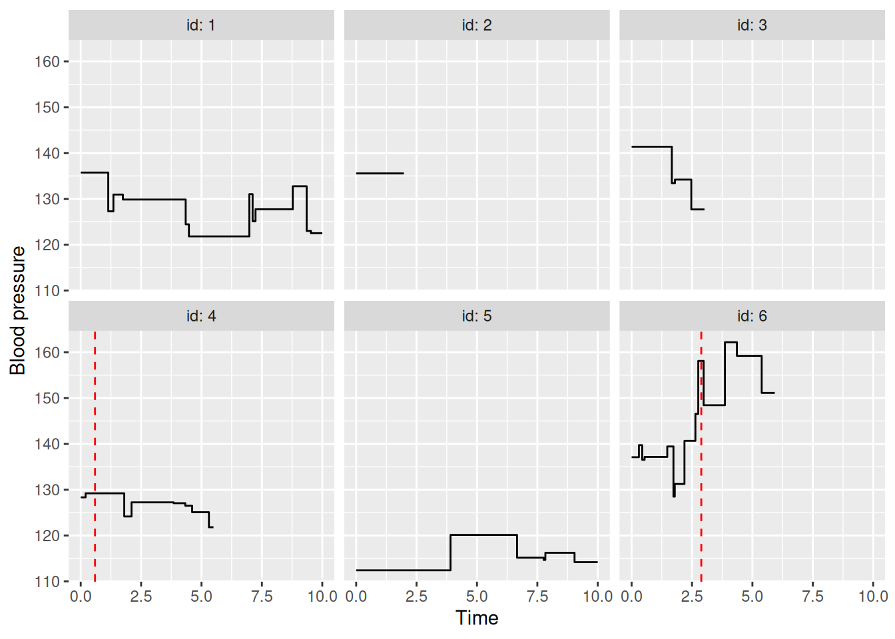

This vignette shows two ways of making hazards depend on an individual’s history in sim_model():
-
Event times,
T_<proc>.<k>: effects that depend on when an event happened. -
Markers,
sim_mark(): covariates that are re-measured over time, e.g. a lab value drawn at each visit.
Event Times: T_<proc>.<k>
Inside a sim_effect() expression, T_<proc>.<k> is the time of process proc’s k-th event, and 0 if it hasn’t happened yet. Combined with the current time t, this gives effects on time since an event: t - T_operation.1 is the time since the first operation.
Since T_<proc>.<k> is 0 before the event, t - T_operation.1 is just t for someone not yet operated. Multiplying by the event count, as in operation * f(t - T_operation.1), can be used to have the effect off until the event has happened.
Example: Post-Operative Mortality
Suppose patients may undergo an operation, which raises the death hazard immediately after, and then gradually fades off. Such an example could look like this:
\lambda_{\text{death}}(t) = \lambda_0(t) \exp\left( 3 \cdot \text{operation}(t) \cdot e^{-2(t-T_{\text{operation},1})} \right).
Here all baseline hazards are constant (\nu = 1), so \lambda_0(t) = 0.02. After the operation, measured in time since the operation, u = t - T_{\text{operation},1}, the death hazard is therefore
h(u) = 0.02 \exp\left( 3 e^{-2u} \right).
Right after the operation the hazard is h(0) = 0.02 e^3 \approx 0.40, about 20 times the baseline. As time passes, e^{-2u} goes to 0 and the hazard returns to the baseline of 0.02. Two time units after the operation, it is only about 6% above the baseline.
operation_model <- sim_model(
censoring = sim_process("censoring", eta = 0.05, nu = 1),
operation = sim_process("transient", eta = 0.2, nu = 1, limit = 1),
death = sim_process("terminal", eta = 0.02, nu = 1),
effects = list(
sim_effect("operation * exp(-2 * (t - T_operation.1))", "death", coef = 3)
)
)
operation_data <- sim_events(
operation_model,
n = 5000,
max_cens = 10,
seed = 1
)
head(operation_data)
#> Key: <id>
#> id time event operation
#> <int> <num> <fctr> <num>
#> 1: 1 4.9115104 censoring 0
#> 2: 2 3.6612164 operation 1
#> 3: 2 10.0000000 max_cens 1
#> 4: 3 2.0634278 operation 1
#> 5: 3 6.4647265 death 1
#> 6: 4 0.3566003 operation 1To check the simulation, follow each operated patient from their operation until death or censoring. The Nelson–Aalen estimator then estimates the cumulative death hazard since the operation, which is (substituting w = 3 e^{-2v}, so dv = -dw / (2w))
\begin{aligned} H(u) & = \int_0^u h(v) \, dv = 0.02 \int_{3 e^{-2u}}^{3} \frac{e^w}{2w} \, dw \\ & = 0.01 \left[ \operatorname{Ei}(3) - \operatorname{Ei}\left( 3 e^{-2u} \right) \right], \end{aligned}
where \operatorname{Ei}(x) = \int_{-\infty}^x e^w / w \, dw is the exponential integral. Censoring and the end of follow-up don’t depend on time since the operation, so the estimate is unbiased. Below, H(u) is computed by numerical integration.
operation_time <- operation_data[event == "operation", .(id, T_op = time)]
post_op <- merge(
operation_data[, .SD[.N], by = id],
operation_time,
by = "id"
)
post_op[, u := time - T_op]
fit <- survfit(Surv(u, event == "death") ~ 1, data = post_op)
H <- function(u) {
vapply(
u,
function(x) integrate(function(v) 0.02 * exp(3 * exp(-2 * v)), 0, x)$value,
numeric(1)
)
}
u_grid <- seq(0, 8, length.out = 200)
ggplot() +
geom_step(aes(fit$time, fit$cumhaz, colour = "Nelson–Aalen")) +
geom_line(aes(u_grid, H(u_grid), colour = "True H(u)"), linetype = "dashed") +
coord_cartesian(xlim = c(0, 8)) +
labs(
x = "Time since operation",
y = "Cumulative death hazard",
colour = NULL
)
Other shapes follow the same pattern. The from expression times coef is added to the log-hazard, for example:
from |
Effect on the log-hazard |
|---|---|
operation * (t - T_operation.1) |
Grows linearly with time since the operation |
operation * (t - T_operation.1 < 1) |
Constant for one time unit after, then gone |
(relapse >= 2) * (t - T_relapse.2) |
Grows linearly with time since the second relapse |
Time-Varying Markers: sim_mark()
A sim_covariate() is drawn once at baseline and never changes. A sim_mark() is drawn at baseline and then redrawn each time one of its update processes fires, staying constant in between. It takes:
-
init: a function ofN(and earlier covariates) giving the baseline values, as forsim_covariate(). -
update: the transient processes whose events redraw the marker. -
draw: a function ofNandlpgiving the new values.
What a new value depends on is specified with sim_effect()s into the marker. At each update, their coef * from terms are summed into the linear predictor lp, which draw can then use, e.g. as the mean of rnorm(). These effects can use anything a hazard effect can, including the marker’s own value before the update, and see the triggering event as having happened.
The marker can also be used in sim_effect() like any other covariate, and the hazards always use its current value.
Example: Blood Pressure and Stroke
Suppose patients have blood pressure measured at visits. High blood pressure makes treatment initiation more likely, treatment lowers subsequent blood pressure, and both blood pressure and treatment affect the stroke hazard. Blood pressure is therefore a time-varying confounder of the effect of treatment on stroke.
Let’s define such a setup, where each new measurement depends on the previous one and on treatment:
\text{bp}_{\text{new}} \sim N\left( 130 + 0.8 (\text{bp}_{\text{prev}} - 130) - 2 \cdot \text{treatment}, \; 6^2 \right).
Untreated, blood pressure has mean 130. Treatment lowers each new measurement mean by 2, and since each measurement carries over 0.8 of the previous one’s deviation, the effect converges to a mean of 130 - 2 / (1 - 0.8) = 120.
bp_model <- sim_model(
age = sim_covariate(function(N) rnorm(N, mean = 60, sd = 10)),
visit = sim_process("transient", eta = 1, nu = 1),
bp = sim_mark(
init = function(N, age) rnorm(N, 130 + 0.5 * (age - 60), 12),
update = "visit",
draw = function(N, lp) rnorm(N, mean = 130 + lp, sd = 6)
),
treatment = sim_process("transient", eta = 0.05, nu = 1, limit = 1),
censoring = sim_process("censoring", eta = 0.05, nu = 1),
stroke = sim_process("terminal", eta = 0.02, nu = 1.2),
effects = list(
sim_effect("bp - 130", "bp", coef = 0.8),
sim_effect("treatment", "bp", coef = -2),
sim_effect("bp - 130", "treatment", coef = 0.08),
sim_effect("bp - 130", "stroke", coef = 0.04),
sim_effect("treatment", "stroke", coef = -0.5)
)
)
summary(bp_model)
#> <sim_model> covariates
#> name kind
#> age baseline
#> bp mark
#>
#> <sim_model> processes
#> name type baseline eta nu limit
#> visit transient weibull 1.00 1.0 Inf
#> treatment transient weibull 0.05 1.0 1
#> censoring censoring weibull 0.05 1.0 Inf
#> stroke terminal weibull 0.02 1.2 Inf
#>
#> <sim_model> effects
#> from to coef
#> bp[k] - 130 bp[k+1] 0.80
#> treatment bp[k+1] -2.00
#> bp - 130 treatment 0.08
#> bp - 130 stroke 0.04
#> treatment stroke -0.50
#>
#> mark[k]: value after the mark's k-th update (k = 0: init)
bp_data <- sim_events(bp_model, n = 3000, max_cens = 10, seed = 1)
head(bp_data, 8)
#> Key: <id>
#> id time event age bp bp_0 visit treatment
#> <int> <num> <fctr> <num> <num> <num> <num> <num>
#> 1: 1 1.140060 visit 53.73546 127.2870 135.7371 1 0
#> 2: 1 1.353592 visit 53.73546 130.9426 135.7371 2 0
#> 3: 1 1.746443 visit 53.73546 129.8539 135.7371 3 0
#> 4: 1 4.345083 visit 53.73546 124.4467 135.7371 4 0
#> 5: 1 4.478843 visit 53.73546 121.8104 135.7371 5 0
#> 6: 1 6.980231 visit 53.73546 131.0238 135.7371 6 0
#> 7: 1 7.116576 visit 53.73546 125.1255 135.7371 7 0
#> 8: 1 7.236297 visit 53.73546 127.7269 135.7371 8 0The summary unrolls the effects into the marker over its updates: bp[k+1], the value after the k+1-th visit, is drawn from bp[k] and the current treatment status. In the data, bp is the value after each row’s event, and bp_0 the baseline value.
Let’s visualize the blood pressure for a few patients, with the treatment start marked:
ids <- 1:6
baseline <- bp_data[id %in% ids, .(time = 0, bp = bp_0[1]), by = id]
trajectories <- rbind(baseline, bp_data[id %in% ids, .(id, time, bp)])
treated <- bp_data[id %in% ids & event == "treatment"]
ggplot(trajectories, aes(time, bp)) +
geom_step() +
geom_vline(
aes(xintercept = time),
data = treated,
linetype = "dashed",
colour = "red"
) +
facet_wrap(~id, labeller = label_both) +
labs(x = "Time", y = "Blood pressure")
Recovering the Effects
To check the simulation works correctly we fit a Cox model for stroke, with each row as an interval from the previous event to this one. Each row stores the values after its event, so the values during the interval are those of the previous row, or the baseline values for a patient’s first row. interval_format_data() does this shift, for marker columns (mark_cols) and process counts (proc_cols):
bp_int <- interval_format_data(
bp_data,
proc_cols = "treatment",
mark_cols = "bp"
)
coxph(
Surv(tstart, tstop, event == "stroke") ~ I(bp - 130) + treatment,
data = bp_int
)
#> Call:
#> coxph(formula = Surv(tstart, tstop, event == "stroke") ~ I(bp -
#> 130) + treatment, data = bp_int)
#>
#> coef exp(coef) se(coef) z p
#> I(bp - 130) 0.034805 1.035418 0.003734 9.321 < 2e-16
#> treatment -0.460699 0.630843 0.102513 -4.494 6.99e-06
#>
#> Likelihood ratio test=100.9 on 2 df, p=< 2.2e-16
#> n= 24636, number of events= 638The estimates are close to the simulated effects of 0.04 and -0.5.
The effects into the marker can be checked the same way. On each visit row, bp in bp_int is the previous measurement, and bp in bp_data the new one, so regressing one on the other and treatment should give roughly 0.8, -2, and a residual standard deviation of 6: